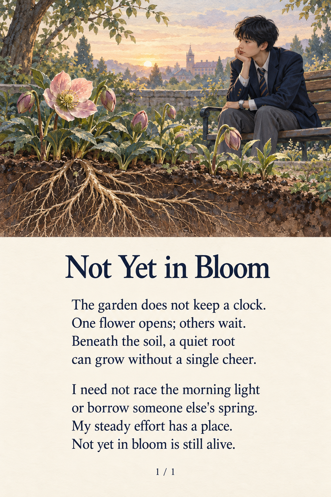

1 / 1 · 해석 및 원문
정원은 시계를 보지 않아요. 한 꽃이 피어나고, 다른 꽃들은 기다려요. 흙 아래 조용한 뿌리는 응원 한마디 없이도 자랄 수 있어요. 아침 햇살과 경주할 필요도, 다른 누군가의 봄을 빌릴 필요도 없어요. 꾸준히 기울이는 내 노력에도 자리가 있어요. 아직 꽃피지 않았어도, 여전히 살아 있어요.
The garden does not keep a clock. One flower opens; others wait. Beneath the soil, a quiet root can grow without a single cheer. I need not race the morning light or borrow someone else's spring. My steady effort has a place. Not yet in bloom is still alive.